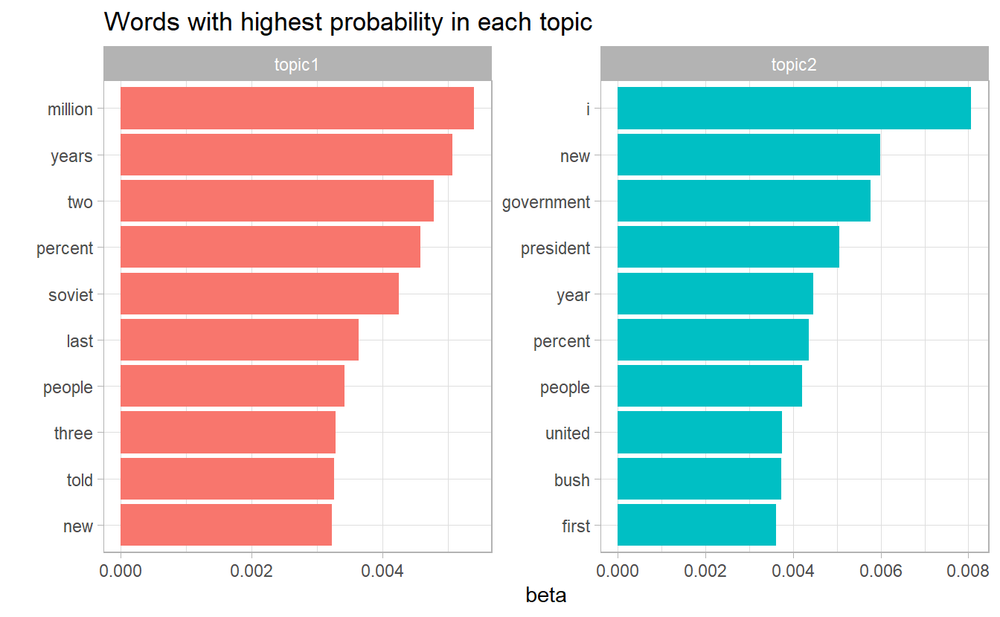
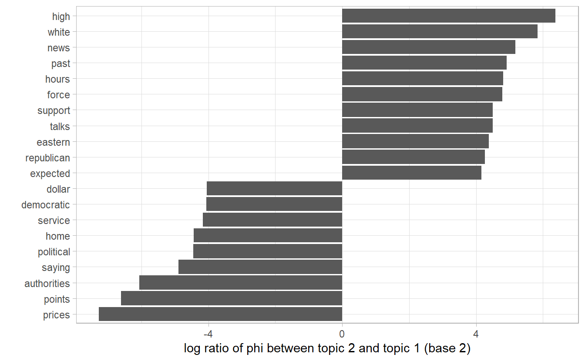
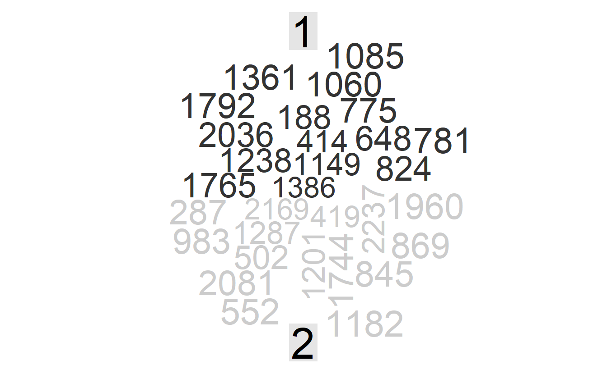

6.1 Latent Dirichlet Allocation
Latent Dirichlet allocation (LDA) is a particularly popular method for fitting a topic model. It treats each document as a mixture of topics, and each topic as a mixture of words. This allows documents to “overlap” each other in terms of content, rather than being separated into discrete groups, in a way that mirrors typical use of natural language.
The LDA model is guided by two principles:
Each document is a mixture of topics. In a 3 topic model we could assert that a document is 70% about topic A, 30 about topic B, and 0% about topic C.
Every topic is a mixture of words. A topic is considered a probabilistic distribution over multiple words.

Figure 6.1: Source: http://nlpx.net/wp/wp-content/uploads/2016/01/LDA_image2.jpg
{kind=link}
In particular, LDA is a imagined generative process, illustrated in the plate notation below:

Figure 6.2: Source: Lee et al. (2018)
- \(M\) denotes the number of documents
- \(N\) is the number of words in a given document (document \(i\) has \(N_i\) words)
- \(\vec{\theta_m}\) is the expected topic proportion of document \(m\), which is generated by a Dirichlet distribution parameterized by \(\vec{\alpha}\) (e.g., in a two topic model \(\theta_m = [0.3, 0.7]\) means document \(m\) is expected to have 30% topic 1 and 70% topic 2)
- \(\vec{\phi_k}\) is the word distribution of topic \(k\), which is generated by a Dirichlet distribution parameterized by \(\vec{\beta}\)
- \(z_{m, n}\) is the topic for the \(n\)th word in document \(m\), one word are assigned to one topic.
- \(w_{m, n}\) is the word in the \(n\)th position word of document \(m\)
The only observed variable in this graphical probabilistic model is \(w_{m, n}\), so it is “latent”.
To actually infer the topics in a corpus, we imagine the generative process as follows. LDA assumes the following generative process for a corpus \(D\) consisting of \(M\) M documents each of length \(N_i\):
Generate \(\vec{\theta_i} \sim \text{Dir}(\vec{\alpha})\), where \(i \in \{1, 2, ..., M\}\). \(\text{Dir}(\vec{\alpha})\) is a Dirichlet distribution with symmetric parameter \(\vec{\alpha}\) where \(\vec{\alpha}\) is often sparse.
Generate \(\vec{\phi_k} \sim \text{Dir}(\vec{\beta})\), where \(k \in \{1, 2, ..., K\}\) and \(\vec{\beta}\) is typically sparse
For the \(n\)th position in document \(m\), where \(n \in \{1, 2, ..., N_m\}\) and \(m \in \{1, 2, ..., M\}\)
- Choose a topic \(z_{m, n}\) for that position which is generated from \(z_{m, n} \sim \text{Multinomial}(\vec{\theta_i})\)
- Fill in that position with word \(w_{m, n}\) which is generated from the word distribution of the topic picked in the previous step \(w_{i,j} \sim \text{Multinomial}(\phi_{z_{m, n}})\)
- Choose a topic \(z_{m, n}\) for that position which is generated from \(z_{m, n} \sim \text{Multinomial}(\vec{\theta_i})\)
6.1.1 Example: Associated Press
We come to the AssociatedPress document term matrix (the required data strcture for the modeling function) and fit a two topic LDA model with topicmodels::LDA()
library(topicmodels)
data("AssociatedPress")
ap_lda <- LDA(AssociatedPress, k = 2)
ap_lda
#> A LDA_VEM topic model with 2 topics.For tidying model objects, tidy(model_object, matrix = "beta") (the default) access the topic-word probability vector (we denotes with \(\vec{\phi_k}\))
tidy(ap_lda)
#> # A tibble: 20,946 x 3
#> topic term beta
#> <int> <chr> <dbl>
#> 1 1 aaron 0.00000513
#> 2 2 aaron 0.0000403
#> 3 1 abandon 0.0000499
#> 4 2 abandon 0.0000193
#> 5 1 abandoned 0.0000116
#> 6 2 abandoned 0.000170
#> # ... with 20,940 more rowsWhich words have a relateve higher probabiltity to appear in each topic?
tidy(ap_lda) %>%
group_by(topic) %>%
top_n(10) %>%
ungroup() %>%
mutate(topic = str_c("topic", topic)) %>%
facet_bar(y = term, x = beta, by = topic) +
labs(title = "Words with highest probability in each topic")
As an alternative, we could consider the terms that had the greatest difference in \(\vec{\phi_k}\) between topic 1 and topic 2. This can be estimated based on the log ratio of the two: \(\log_2(\frac{\phi_{1n}}{\phi_{2n}})\), \(\phi_{1n} / \phi_{2n}\) being the probability ratio of the sam e word \(n\) in two topics (a log ratio is useful because it makes the difference symmetrical)
phi_ratio <- tidy(ap_lda) %>%
mutate(topic = str_c("topic", topic)) %>%
pivot_wider(names_from = topic, values_from = beta) %>%
filter(topic1 > .001 | topic2 > .001) %>%
mutate(log_ratio = log2(topic2 / topic1))This can answer a question like: which word is most representative of a topic?
phi_ratio %>%
top_n(20, abs(log_ratio)) %>%
ggplot(aes(y = fct_reorder(term, log_ratio),
x = log_ratio)) +
geom_col() +
labs(y = "",
x = "log ratio of phi between topic 2 and topic 1 (base 2)")
To extrac the word proportion vector \(\vec{\theta_m}\) for document \(m\), use matrix = "gamma" in tidy()
tidy(ap_lda, matrix = "gamma")
#> # A tibble: 4,492 x 3
#> document topic gamma
#> <int> <int> <dbl>
#> 1 1 1 0.552
#> 2 2 1 0.623
#> 3 3 1 0.491
#> 4 4 1 0.464
#> 5 5 1 0.517
#> 6 6 1 0.482
#> # ... with 4,486 more rowsWith this data frame, we want to knwo which document is most charateristic of each topic?
library(reshape2)
library(wordcloud)
tidy(ap_lda, matrix = "gamma") %>%
group_by(topic) %>%
top_n(15) %>%
mutate(document = as.character(document)) %>%
acast(document ~ topic, value.var = "gamma", fill = 0) %>%
comparison.cloud(colors = c("gray20", "gray80"), scale = c(2, 8))
This plot would definitely be more insightful if we have document titles rather than an ID.